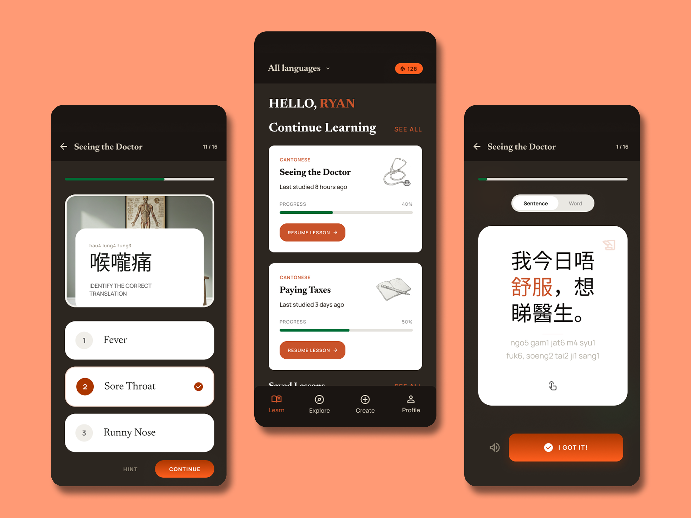
LINGUA
01 - Ideation
The project began with qualitative interviews exploring how children of immigrants navigate language barriers at home and in public. Participants came from a range of backgrounds, including Hong Kong, Nigeria, Chile, Ecuador, and beyond, but shared a common experience of translating for their families. Two themes surfaced consistently: the pressure of handling formal or technical language, and the isolation of not having the vocabulary they needed.
It's hard to ask for help, because I can't always understand what's being said or what they're asking me to do.
I feel overwhelmed when I have to translate everything, especially when it's medical or formal and I'm not fully sure of the words.
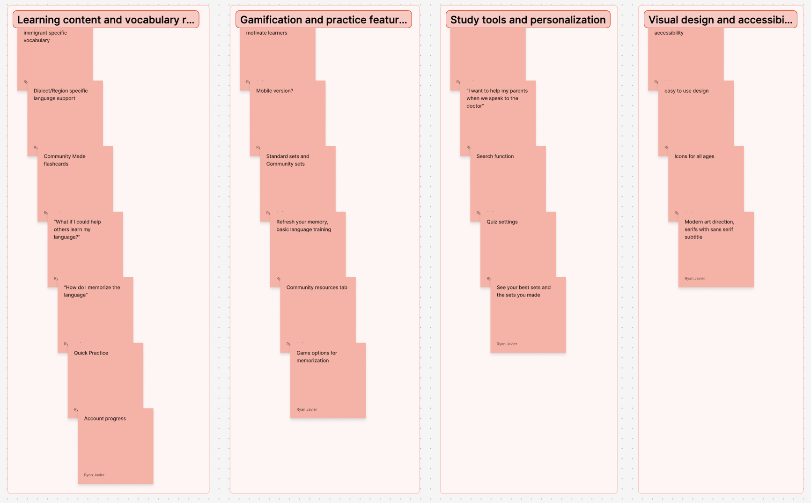
Synthesizing patterns across participants
Interview responses were organized into affinity diagrams to surface patterns across participants and determine which needs were most widely shared. Grouping the data revealed clear categories around emotional strain, vocabulary gaps, and situation-specific demands. From those categories, I ranked potential features by how directly they addressed the core pain points and how feasible they were within the project scope.
Several interviewees brought up features like real-time AI translation or direct integration with tools such as Google Translate. While these suggestions were meaningful and worth noting, they fell outside the scope of this project. They are documented here as strong candidates for future development.
02 - User Research
With the problem space clearly mapped, I created user personas to represent the range of people who would realistically use LINGUA. The personas were grounded in specific scenarios rather than abstract demographics, capturing use cases such as accompanying a parent to a medical appointment, setting up a new device, navigating paperwork, or simply wanting to deepen fluency in a language tied to family heritage. Rooting the personas in concrete situations made each one a direct pointer to design decisions about structure, content, and what the interface needed to communicate immediately.
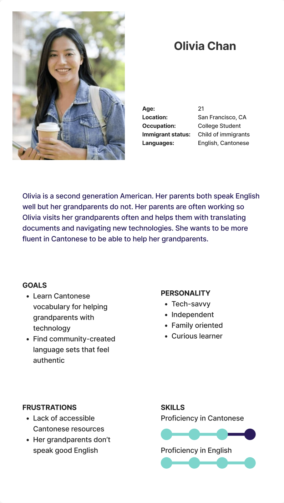
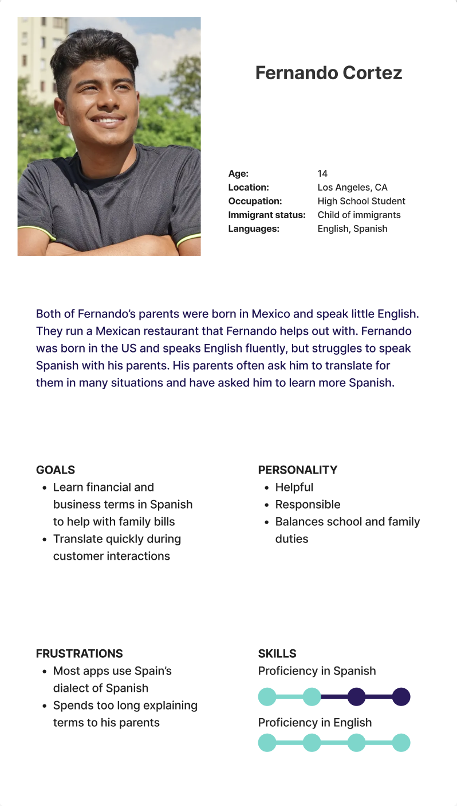
The personas then informed a series of user journey maps that traced how a typical user might encounter a language barrier in the real world, reach for the app as a resource, and either succeed or run into friction. Mapping those journeys in full revealed exactly where LINGUA needed to step in and what the interface had to surface clearly and quickly. The journey maps also confirmed which scenarios called for preset expert content and which called for the flexibility of user-generated sets.

User journey maps tracing real-world language barrier scenarios through the app experience
03 - Lo-Fi Prototype

Mapping the structure before touching the screen
Before sketching any screens, I built out the information architecture to ensure the app's structure supported every use case identified through research. The diagram mapped every major section of the app, the relationships between them, and the primary actions a user would need to complete in each area. Reviewing the architecture confirmed that the feature set was coherent and that navigation would not require users to search for what they needed.
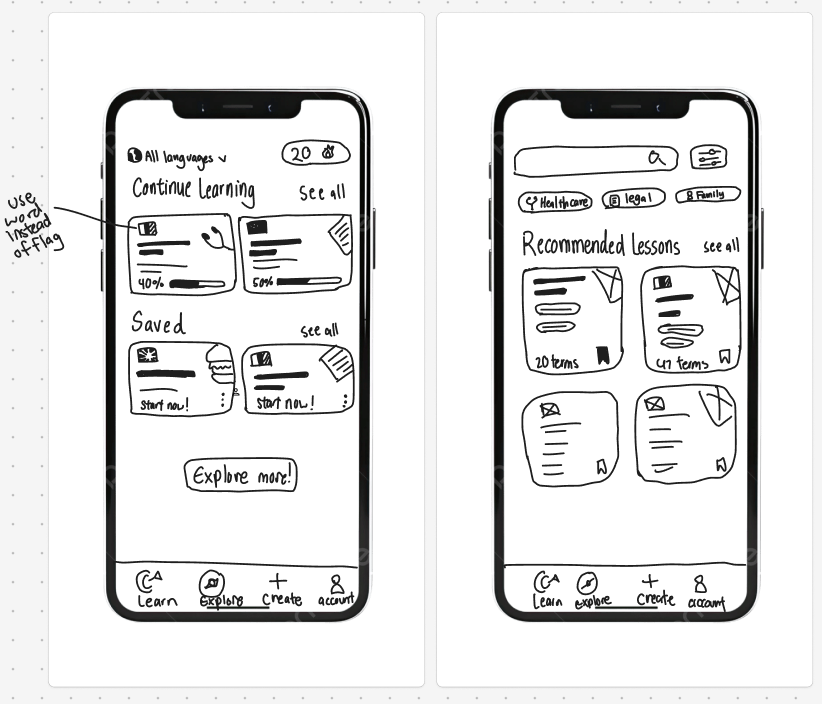
Rough layouts to surface the right questions early
With the architecture settled, I moved into wireframe sketches. Working at this stage, before any visual decisions are locked in, makes it easier to question the structure while changes are still cheap. The sketches quickly surfaced key questions: what belongs in the navigation bar, how to distinguish expert-created content from community-generated sets, and how much flexibility to give users within each learning mode.
Sketching the wireframe surfaced questions about navigation depth, how to present expert versus community-created content, and how many options to give users within each learning mode. Resolving these early kept them from compounding into more expensive problems during high-fidelity production.
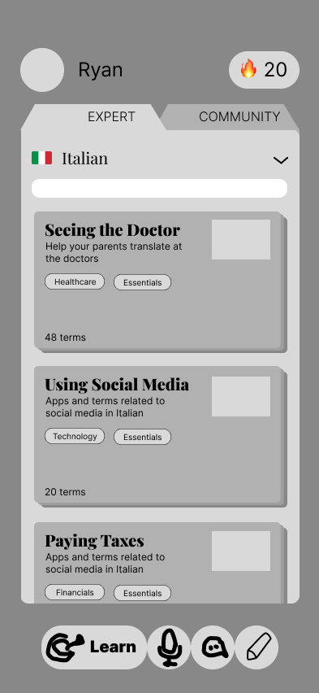
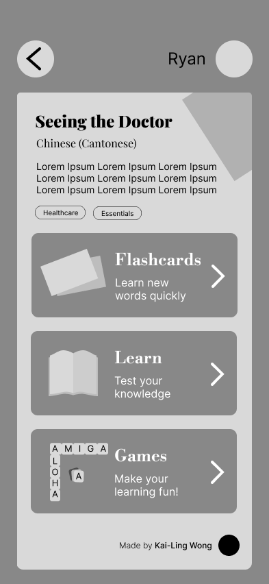
Learn feature and lesson detail
The first screen explored the main learn view, giving users a clear picture of their active lessons and current progress at a glance. The second screen introduced the lesson detail view, where users could see the three learning modes available within each lesson: flashcards for quick review, a structured learn mode for deeper practice, and an interactive game. Exploring how these three modes would coexist on a single screen raised early questions about hierarchy and what the user should encounter first.
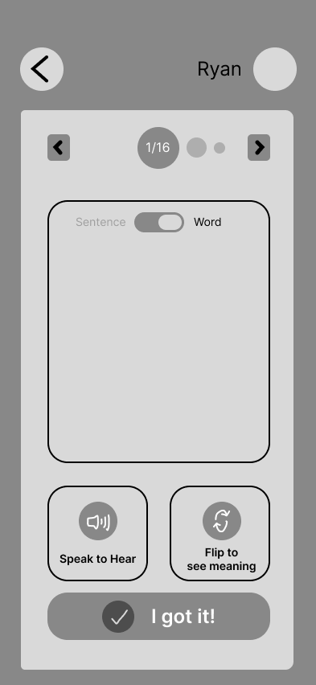
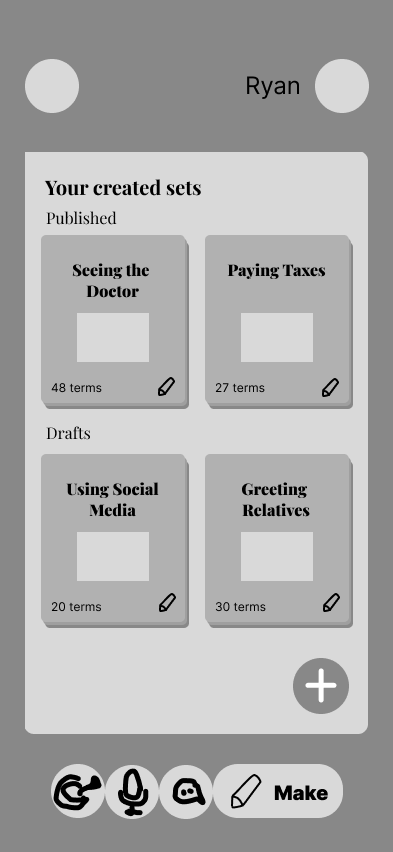
Flashcard navigation and content creation
The third screen focused on the individual flashcard view, testing whether users could navigate through cards intuitively without any on-screen instruction. The fourth introduced the make section, where users build new card sets from scratch. Testing both at low fidelity allowed me to pressure-test assumptions about swipe-based card interactions and user familiarity with content creation flows before committing to them at high fidelity.
04 - User Testing
A group of participants, including some who had been interviewed during the ideation phase, completed a structured task flow using the lo-fi prototype. Tasks were chosen to reflect realistic use cases: finding a lesson, reviewing a set of flashcards, creating a new card set, and moving between sections of the app. After completing the tasks, participants shared both verbal feedback and written responses. The results pointed clearly to two recurring problem areas: the navigation bar and the search function. Both emerged as consistent friction points across the majority of participants.
The most important finding was that users did not understand what the icons in the navigation bar represented, and labels like "make" failed to give them enough context to identify the section's purpose. Clearer labels and more familiar iconography became the top design priority for the next phase.
05 - Final Design
The final design addressed every significant finding from user testing, reworking the navigation system and search experience while refining the learning flows that already tested well. Each screen was built on a consistent component library, ensuring that interactions and visual language stayed predictable throughout the app.
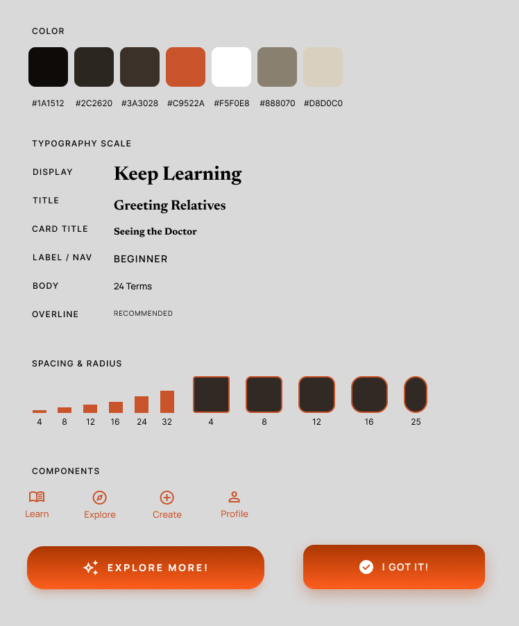
A shared foundation for every screen
Before building any final screens, I created a design system covering color, typography, spacing, and reusable components. I recognized early that consistency would be critical to the overall design, as without it the app would feel fragmented no matter how strong the individual screens were. The orange and black palette was chosen deliberately: the warmth of orange reflects optimism and enthusiasm for learning, while black grounds it with calm and focus.
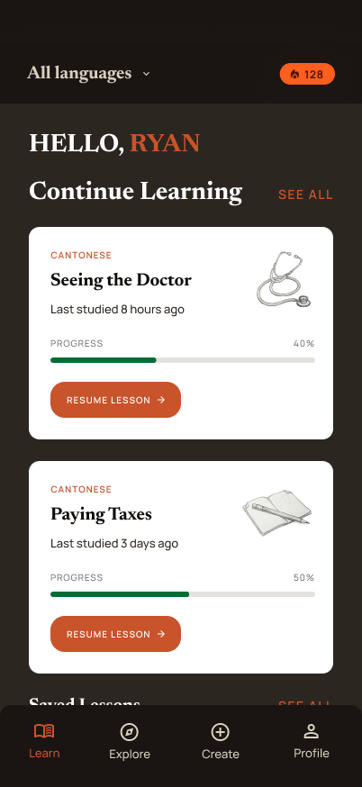
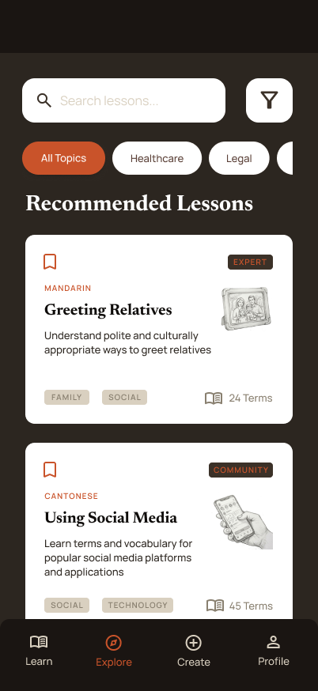
Learn + Explore
The navigation was reorganized to provide clearer directional cues for users moving through the app. The learn screen surfaces active lessons alongside contextual details such as progress percentage, the date last studied, and the target language, giving users the information they need to pick up exactly where they left off. A prominent action button draws users directly into their current lesson the moment they open the app. The explore screen allows users to search the full lesson library with quick-filter tags for streamlined browsing. Filtering options include language, content type (expert or community), and other categories. Tags and brief descriptions accompany each result, and a recommended section surfaces lessons based on each user's history.
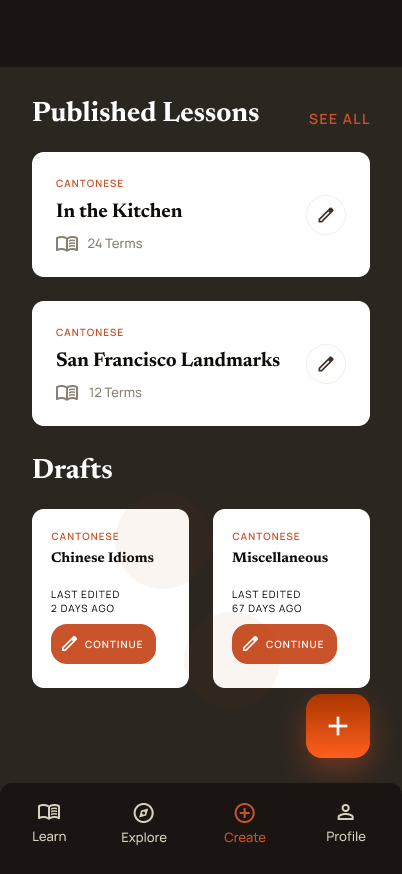
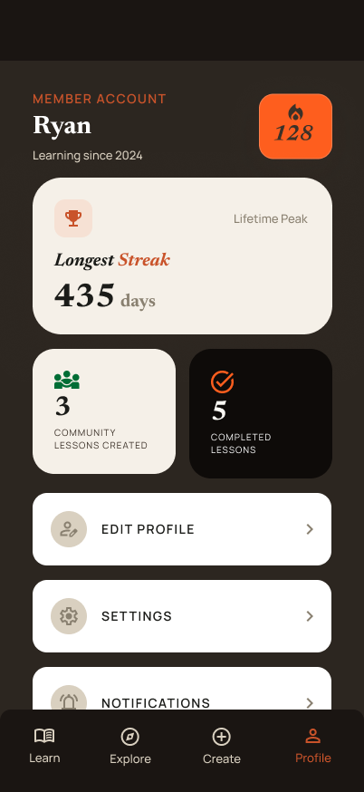
Create + Profile
The create screen gives users a clear view of both their published and draft lessons, making it easy to pick up an unfinished set or start something new. Editing flows from this screen seamlessly, keeping the creation experience frictionless. The profile screen tracks user activity through stats such as current streak, number of community lessons created, and total completed lessons. Surfacing these figures reinforces a sense of progress and encourages users to return consistently over time.
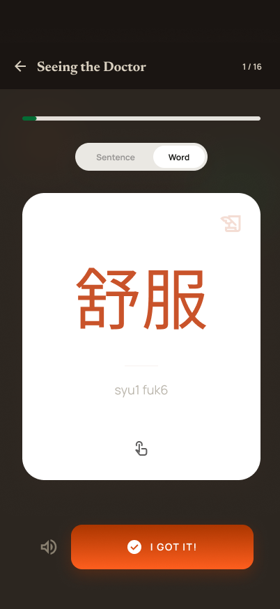
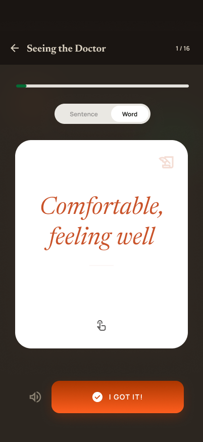
Flashcard Mode: Word + Meaning
The standard flashcard mode presents each word alongside its meaning for direct, low-friction review. The layout is clean and uncluttered, keeping the focus on the vocabulary itself. This mode is designed for users who want a fast, self-directed review session without additional scaffolding.
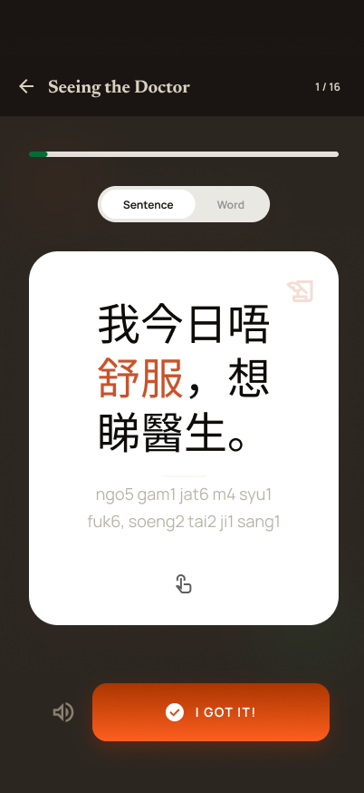
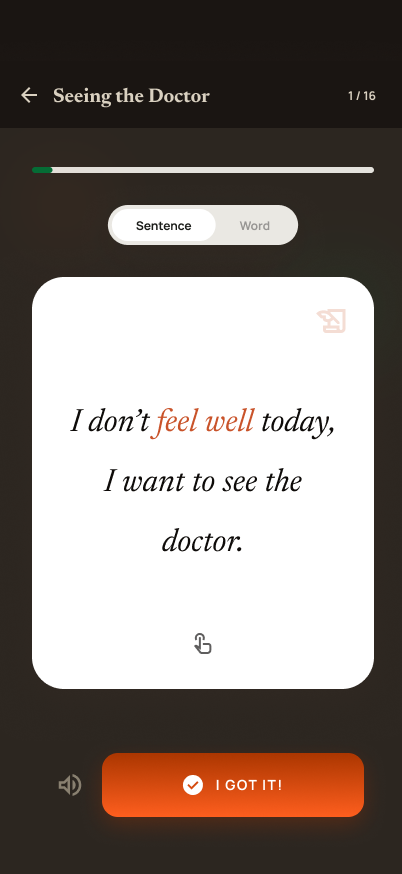
Flashcard Mode: Sentence Context
The sentence flashcard mode places each target word within a full sentence, paired with a translation and a phonetic transcription. The target word is highlighted within the sentence to draw the eye and reinforce recognition in context. This mode directly addresses one of the core findings from user research: that words encountered in isolation are harder to retain and apply than words seen in a realistic phrase or situation.
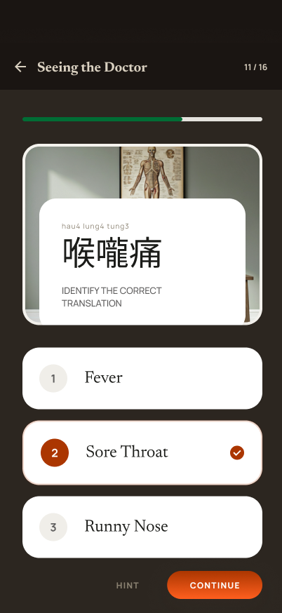
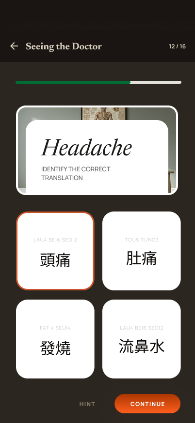
Quiz Mode: Application + Feedback
The quiz mode asks users to actively apply what they have been reviewing rather than passively flipping through cards. Each question is followed by immediate feedback, letting users know whether their answer was correct and reinforcing the right response in the moment. This active recall approach is more cognitively demanding than passive review, and the feedback loop ensures users leave each session with a clearer picture of where they stand.
06 - Future Implementation
LINGUA has a clear path forward beyond its current state. Three directions stand out as the most meaningful next steps for expanding both the product's reach and its impact.
Translation and AI Tools Several participants raised the idea of real-time translation or AI-assisted features during early interviews. While those capabilities fell outside the scope of this project, they represent a natural evolution of what LINGUA already does. Integrating AI translation as a complementary tool would allow users to address urgent translation needs in the moment while continuing to build long-term vocabulary through the existing learning modules.
Expanded Language Offerings The current design supports a defined set of languages, but the user-generated content system already creates a pathway toward broader coverage. A dedicated effort to expand the expert-curated library, particularly for regional dialects and languages with limited digital resources, would make LINGUA meaningfully more inclusive for communities that are currently underserved by mainstream language learning tools.
Social Features and Healthy Competition Language learning is easier to sustain when it feels shared. Adding the ability to follow friends, see their progress, and participate in friendly challenges would give users a social incentive to return consistently. Leaderboards, collaborative sets, and streak-sharing features could transform LINGUA from a personal tool into a community-driven experience, deepening engagement without compromising the focused, low-pressure learning environment the app currently provides.

Me at my senior capstone poster expo!